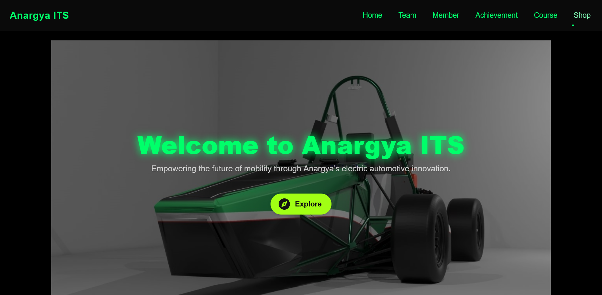
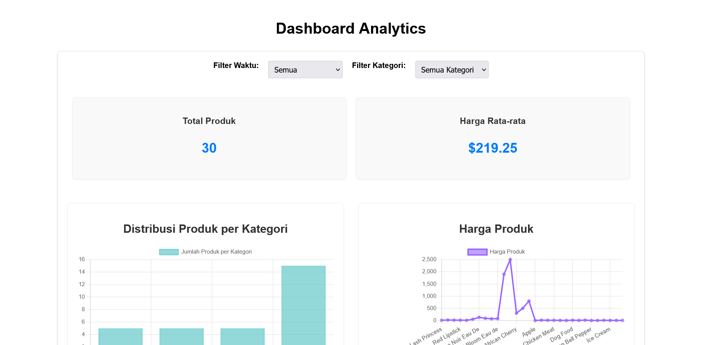
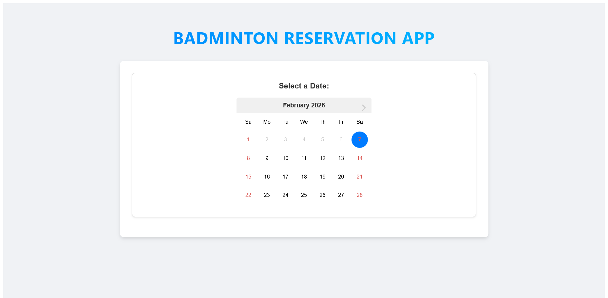

This is the about section of my portfolio website. Here you can learn more about me and my background.
Over 10 years of experience with the WordPress CMS creating everything from basic brochures to full-blown eCommerce stores. Using expert design and code skills to create bespoke themes & plugins as well as leveraging in depth knowledge of the huge 3rd-party ecosystem.
I thoughtfully design websites and interfaces that solve problems, deliver results and delight users.
Bring your ideas to life with modern, performant, accessible and maintainable front & back-end code.
Your website in safe hands from launch and beyond with hosting, SEO, analytics and support.